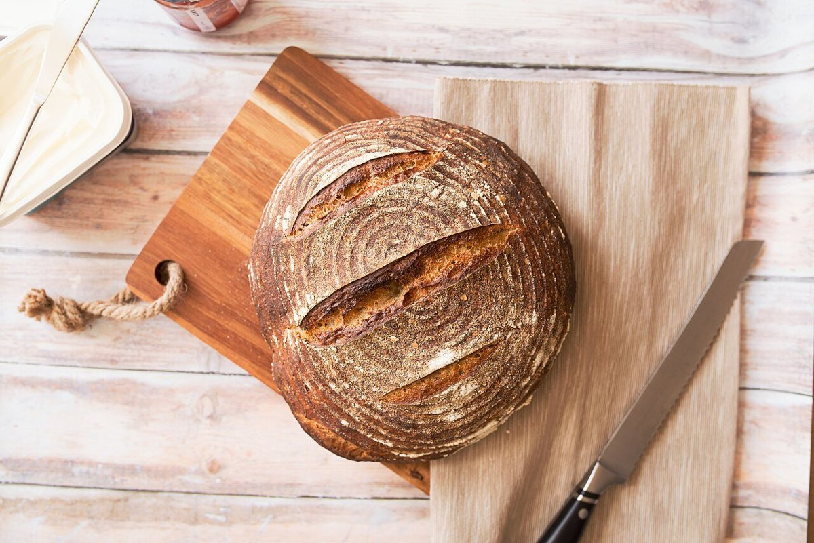
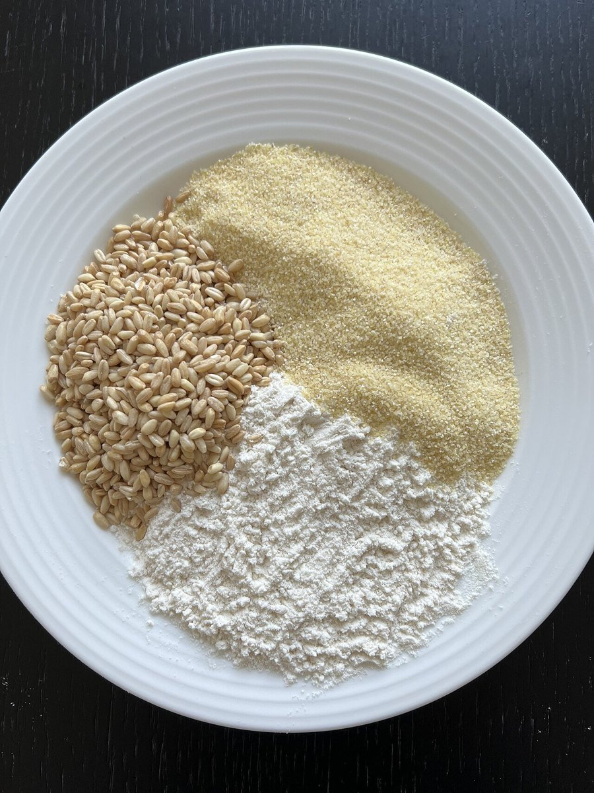
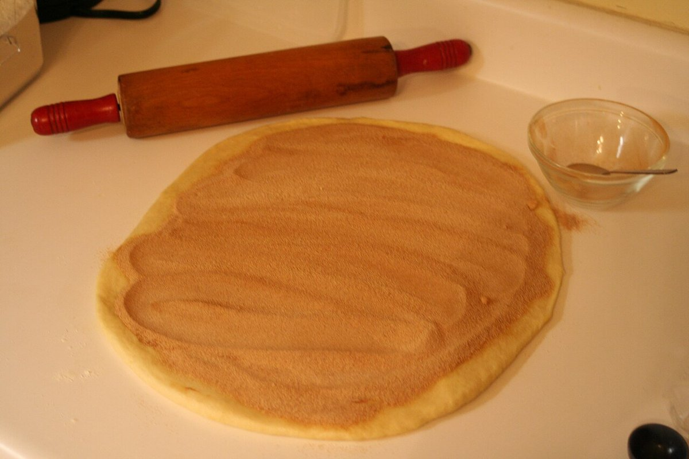
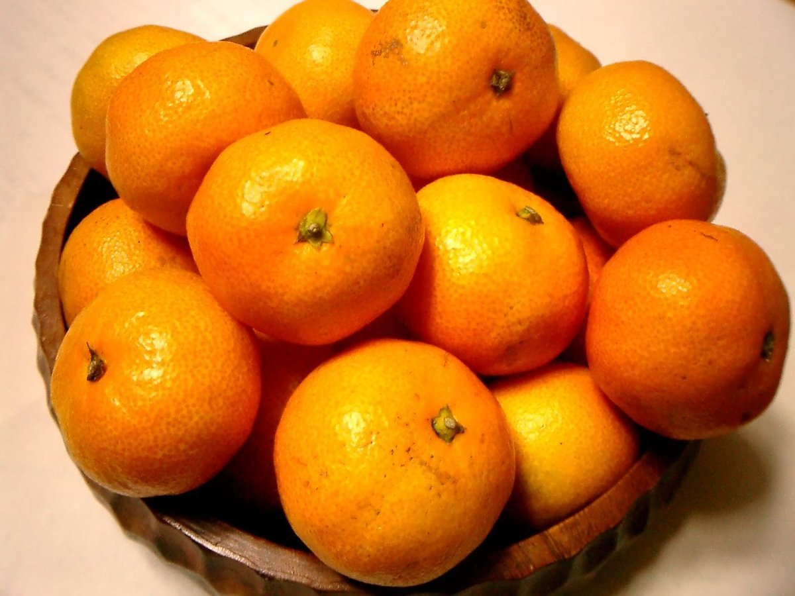

ちいさいパン屋 クボサンチ

掲載写真はフリー素材のイメージ写真で、店舗の実際の商品・店内ではありません。他の地域で撮影されたものや、撮影地が不明なものを含みます。

くわしい内容は確認でき次第お伝えします。いまのところ、次の項目は準備中です。
お問い合わせは電話またはInstagramからどうぞ。
素材や作る場面のイメージです。お店の実際の様子ではありません。


制作側の案として、地域の景色を連想させる色づかいにしています。
